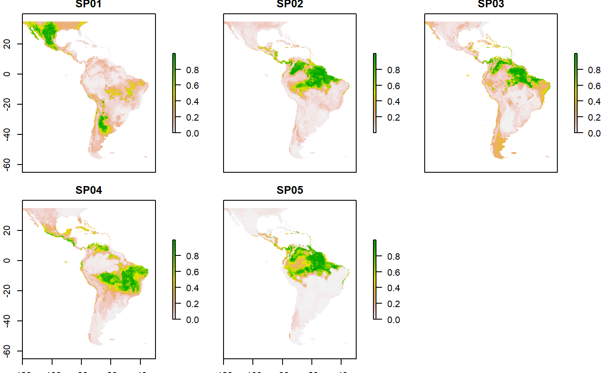
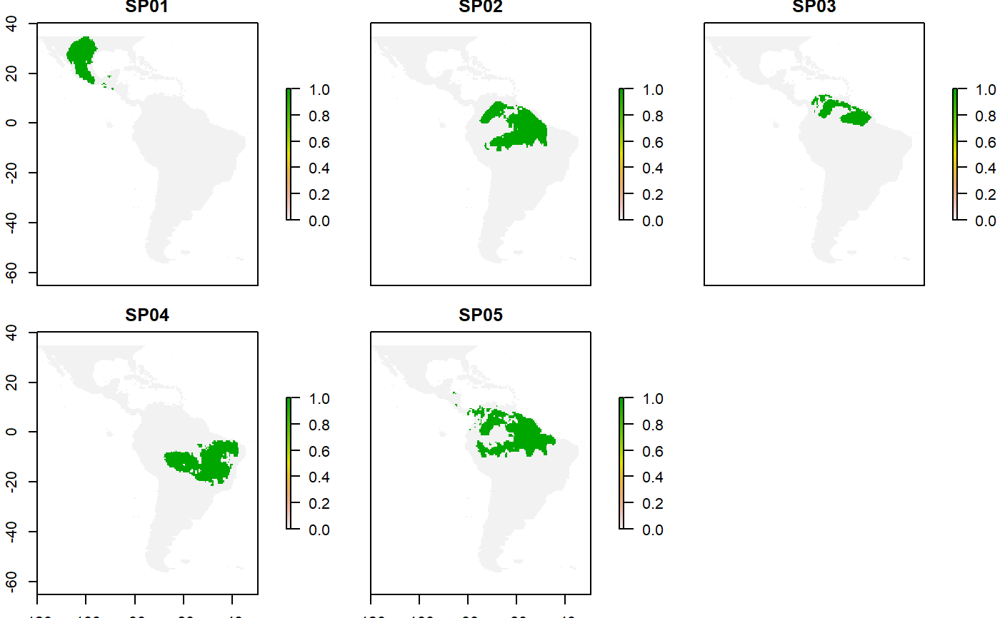
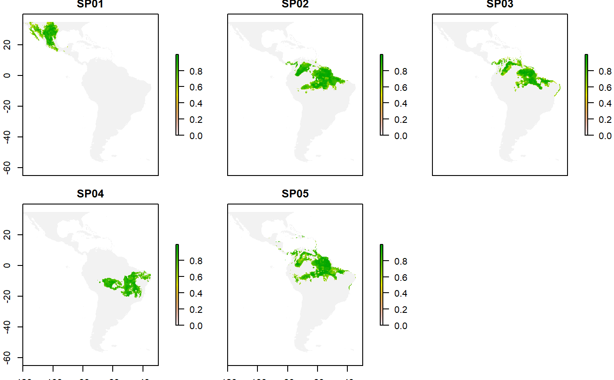

Methods to correct overprediction of species distribution models based on occurrences and suitability patterns.
Source:R/MSDM_Posteriori.R
MSDM_Posteriori.RdMethods to correct overprediction of species distribution models based on occurrences and suitability patterns.
MSDM_Posteriori( records, absences, x = NA, y = NA, sp = NA, method = c("OBR", "PRES", "LQ", "MCP", "BMCP"), dirraster = NULL, threshold = c("kappa", "spec_sens", "no_omission", "prevalence", "equal_sens_spec", "sensitivty"), buffer = NULL, dirsave = NULL )
Arguments
| records | data.frame. A database with geographical coordinates of species presences used to create species distribution models. |
|---|---|
| absences | data.frame. A database with geographical coordinates of species absences used to create species distribution models. |
| x | character. Column name with longitude values. This name must be the same for presences and absences database. |
| y | character. Column name with latitude values. This name must be the same for presences and absences database. |
| sp | character. Column name with species names. Species names must be the same for presences, absences, and raster layer (i.e. species distribution) databases. It would be desirable that the species names are as simple as possible and with no space between the genus and the specific epithet (e.g. Alchornea_glandulosa). Do not use author names, symbols or accents. For example, substitute names like Senna chacoensis (L.Bravo) H.S.Irwin & Barneby or Erythrina crista-galli L., for Senna_chacoensis and Erythrina_cristagalli. It is mandatory that the species names and the raster are the same. |
| method | character. A character string indicating which MSDM method must be used create. |
| dirraster | character. A character string indicating the directory where are species raster files, i.e. species distribution models. It is mandatory that the species names and the raster are the same (see comments about species names format in 'sp' argument ). Raster layer must be in geotiff format. |
| threshold | character. Select type of threshold (kappa, spec_sens, no_omission, prevalence, equal_sens_spec, sensitivity)
to get binary models (see |
| buffer | character. Type o buffer width use in BMCP approach. "single" type will be used a single buffer width for all species, this value is interpreted in km (e.g. buffer=c(type="single", km=126)). "species_specific" type calculates the minimum pairwise-distances between all occurrences and then select the maximum distance, i.e., the value of the buffer will be the maximum distance from the minimum distance. This procedure depends on the presence occurrences of each species, thus for each species, a value of buffer width will be calculated (usage buffer="species_specific"). |
| dirsave | character. A character string indicating the directory where result must be saved. |
Value
This function save raster files (with geotiff format) with continuous and binary species raster files separated in CONr and BINr folders respectively.
Details
Abbreviation list
SDM: species distribution model
l: suitability patches that intercept species occurrences
k: suitability patches that do not intercept species occurrences
T: threshold distances used to select suitability patches
These methods reduce overprediction of species distribution models already fitted based on the occurrences and suitability patterns of species (see 'threshold' arguments)
OBR(Occurrences based restriction)- This method assumes that suitable patches intercepting species occurrences (l) are likely a part of species distributions than suitable patches that do not intercept any occurrence (k). Distance from all patches k species occurrences to the closest l patch is calculated, later it is removed k patches that trespass a species-specific distance threshold from SDMs models. This threshold (T) is calculated as the maximum distance in a vector of minimal pairwise distances between occurrences. Whenever a suitable pixel is within a k patch distant from the closest l in less than T, the suitability of the pixel was reduced to zero. We assumed that this simple threshold is a surrogate of the species-specific dispersal ability. If T is low, either the species has been sampled throughout its distribution, or the species is geographically restricted, justifying a narrow inclusion of k patches (Mendes et al., 2020).
PRES (Only occurrences based restriction). This is a more restrictive variant of the OBR method. It only retains those pixels in suitability patches intercepting occurrences (k) (Mendes et al., 2020).
LQ (Lower Quantile). This method is similar to the OBR method, except by the procedure to define a distance threshold to withdrawn k patches, which is the lower quartile distance between k patches to the closest l patch. Whenever a suitable pixel is within a k patch, i.e. not within this lower quartile, the suitability of the pixel is reduced to zero. This means that 75
MCP (Minimum Convex Polygon). Compiled and adapted from Kremen et al. (2008), this method excludes from SDMs climate suitable pixels that do not intercept a minimum convex polygon, with interior angles smaller than 180, enclosing all occurrences of a species.
BMCP (Buffered Minimum Convex Polygon). Compiled and adapted from Kremen et al. (2008), it is alike the MCP except by the inclusion of a buffer zone surrounding minimum convex polygons. When used with the "single" options for buffer argument function will ask for a value in km to be used as the buffer with. When used "species_specific" a buffer will be calculated for each species based on the presences occurrences patterns, assuming as buffer width the maximum distance in a vector of minimal pairwise distances between occurrences.
Further methodological and performance information of these methods see Mendes et al. (2020).
References
Mendes, P.; Velazco S.J.E.; Andrade, A.F.A.; De Marco, P. (2020) Dealing with overprediction in species distribution models: how adding distance constraints can improve model accuracy, Ecological Modelling, in press. https://doi.org/10.1016/j.ecolmodel.2020.109180
Kremen, C., Cameron, A., Moilanen, A., Phillips, S. J., Thomas, C. D., Beentje, H., . Zjhra, M. L. (2008). Aligning Conservation Priorities Across Taxa in Madagascar with High-Resolution Planning Tools. Science, 320(5873), 222-226. doi:10.1126/science.1155193
See also
Examples
#>#>data("sp_sdm") #continuous species distribution models of five species data("occurrences") #presences data data("absences") #absences data # sp_sdm is database with simple species distribution models, i.e. without any restriction method plot(sp_sdm)#> [1] "C:\\Users\\santi\\AppData\\Local\\Temp\\RtmpyUIJML"#> [1] "C:\\Users\\santi\\AppData\\Local\\Temp\\RtmpyUIJML/MSDM"# The data of sp_sdm will be saved in a folder in the tmdir. This is not necessary when # using your data, it is just to make this example reproducible. When you use your own data, it will be enough to have a folder with your model of the species dir.create(file.path(tmdir, "original_sdm")) dir_models <- file.path(tmdir, "original_sdm") dir_models#> [1] "C:\\Users\\santi\\AppData\\Local\\Temp\\RtmpyUIJML/MSDM/original_sdm"writeRaster(sp_sdm, file.path(dir_models, names(sp_sdm)), bylayer=TRUE, format='GTiff', overwrite=TRUE)#> Warning: NOT UPDATED FOR PROJ >= 6#> Warning: NOT UPDATED FOR PROJ >= 6#> Warning: NOT UPDATED FOR PROJ >= 6#> Warning: NOT UPDATED FOR PROJ >= 6#> Warning: NOT UPDATED FOR PROJ >= 6# shell.exec(dir_models) # BMCP method with a single buffer for all species---- MSDM_Posteriori(records=occurrences, absences=absences, x="x", y="y", sp="sp", method="BMCP", buffer=c(type="single", km=150), dirraster = dir_models, threshold = "spec_sens", dirsave = tmdir)#> 1 from 5 : SP01#>#> Warning: CRS object has comment, which is lost in output#> Warning: CRS object has comment, which is lost in output#> Warning: NOT UPDATED FOR PROJ >= 6#> Warning: NOT UPDATED FOR PROJ >= 6#> 2 from 5 : SP02#> Warning: CRS object has comment, which is lost in output#> Warning: CRS object has comment, which is lost in output#> Warning: NOT UPDATED FOR PROJ >= 6#> Warning: NOT UPDATED FOR PROJ >= 6#> 3 from 5 : SP03#> Warning: CRS object has comment, which is lost in output#> Warning: CRS object has comment, which is lost in output#> Warning: NOT UPDATED FOR PROJ >= 6#> Warning: NOT UPDATED FOR PROJ >= 6#> 4 from 5 : SP04#> Warning: CRS object has comment, which is lost in output#> Warning: CRS object has comment, which is lost in output#> Warning: NOT UPDATED FOR PROJ >= 6#> Warning: NOT UPDATED FOR PROJ >= 6#> 5 from 5 : SP05#> Warning: CRS object has comment, which is lost in output#> Warning: CRS object has comment, which is lost in output#> Warning: NOT UPDATED FOR PROJ >= 6#> Warning: NOT UPDATED FOR PROJ >= 6#> results are in: #> C:\Users\santi\AppData\Local\Temp\RtmpyUIJML/MSDMd <- list.dirs(tmdir, recursive = FALSE) # Categorical models corrected by BMCP methods cat_bmcp <- stack(list.files(d[1], full.names = TRUE)) plot(cat_bmcp)# Continuous models corrected by BMCP methods con_bmcp <- stack(list.files(d[2], full.names = TRUE)) plot(con_bmcp)# shell.exec(rdir) # OBR method---- MSDM_Posteriori(records=occurrences, absences=absences, x="x", y="y", sp="sp", method="OBR", dirraster = dir_models, threshold = "spec_sens", dirsave = tmdir)#> Warning: 'C:\Users\santi\AppData\Local\Temp\RtmpyUIJML\MSDM\BINr' already exists#> Warning: 'C:\Users\santi\AppData\Local\Temp\RtmpyUIJML\MSDM\CONr' already exists#> 1 from 5 : SP01#> Warning: NOT UPDATED FOR PROJ >= 6#> Warning: NOT UPDATED FOR PROJ >= 6#> 2 from 5 : SP02#> Warning: NOT UPDATED FOR PROJ >= 6#> Warning: NOT UPDATED FOR PROJ >= 6#> 3 from 5 : SP03#> Warning: NOT UPDATED FOR PROJ >= 6#> Warning: NOT UPDATED FOR PROJ >= 6#> 4 from 5 : SP04#> Warning: NOT UPDATED FOR PROJ >= 6#> Warning: NOT UPDATED FOR PROJ >= 6#> 5 from 5 : SP05#> Warning: NOT UPDATED FOR PROJ >= 6#> Warning: NOT UPDATED FOR PROJ >= 6#> results are in: #> C:\Users\santi\AppData\Local\Temp\RtmpyUIJML/MSDMd <- list.dirs(tmdir, recursive = FALSE) # Categorical models corrected by OBR methods cat_obr <- stack(list.files(d[1], full.names = TRUE)) plot(cat_obr)# Continuous models corrected by OBR methods con_obr <- stack(list.files(d[2], full.names = TRUE)) plot(con_obr)# shell.exec(rdir)